Costa Blanca · Dénia
Property for sale in Dénia
New apartments a short walk from the beach, frontline homes with sea views and townhouses near the sea, below the castle and the Montgó. Here are the properties we sell in Dénia today, with a short guide to the areas and what buying really costs.
- 12properties for sale in Dénia
- from €254,000for an apartment
- about 1 hour 15 minto Valencia or Alicante airport
- ferriesto Ibiza and Mallorca
For sale now
Properties for sale in Dénia
Apartments with 1 to 3 bedrooms close to the beach, some on the frontline with sea views, plus townhouses and a villa. Prices are as listed today; ask us for the current availability.
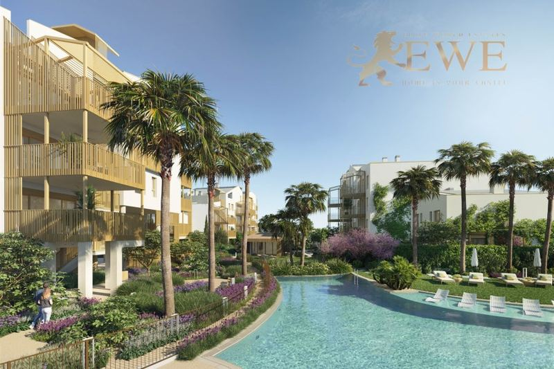
EWE2415Dénia
A wonderful apartment in a luxurious housing estate close to the beach in Denia
€254,000
1 bedroom · 1 bathroom · 43 m²Ref. EWE2415
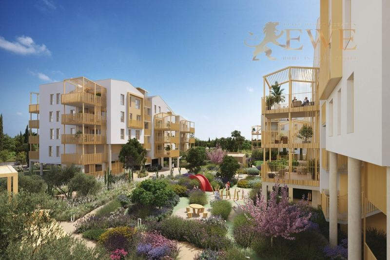
EWE3875Dénia
Exceptional apartment in a new development close to the beach in Denia
€327,000
2 bedrooms · 2 bathrooms · 56 m²Ref. EWE3875
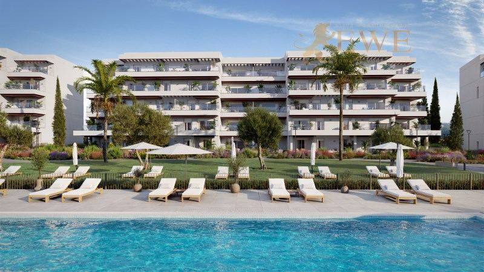
EWE3483Dénia
New apartments 200 m from the beach in the picturesque town of Denia
€333,000
2 bedrooms · 2 bathrooms · 68 m²Ref. EWE3483
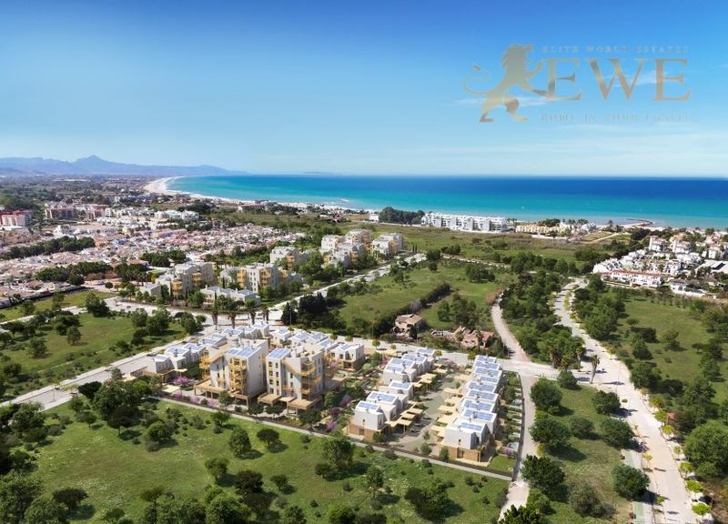
EWE3285Dénia
Excellent townhouses just 400m from the sea in the picturesque town of Denia
€370,000
2 bedrooms · 2 bathrooms · 75 m²Ref. EWE3285
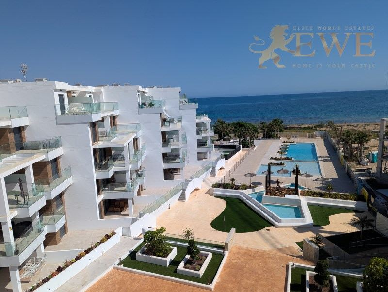
EWE1723Dénia
A stunning apartment on the first coastline in Dénia
€379,000
2 bedrooms · 2 bathrooms · 62 m²Ref. EWE1723
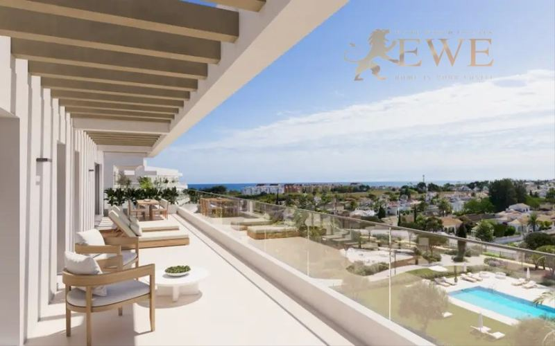
EWE3484Dénia
New apartments 200 m from the beach in the picturesque town of Denia
€395,000
3 bedrooms · 2 bathrooms · 81 m²Ref. EWE3484
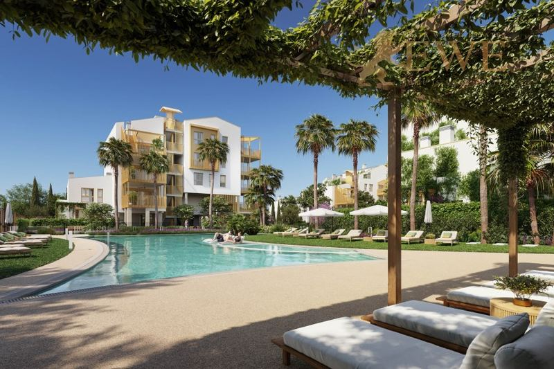
EWE2414Dénia
Modern apartment just 400 m from the sea in Dénia
€470,000
3 bedrooms · 2 bathrooms · 82 m²Ref. EWE2414
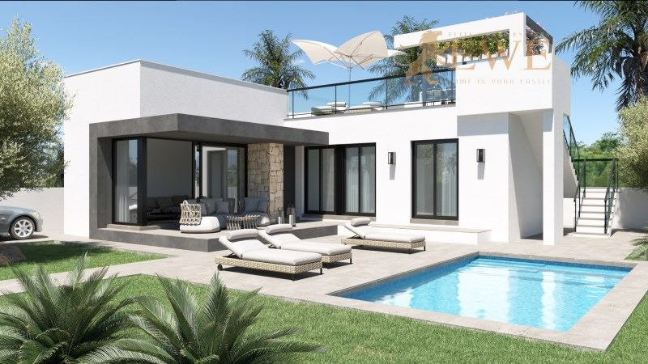
EWE3173Dénia
Magnificent terraced house with large solarium in Els Poblets
€475,000
3 bedrooms · 2 bathroomsRef. EWE3173
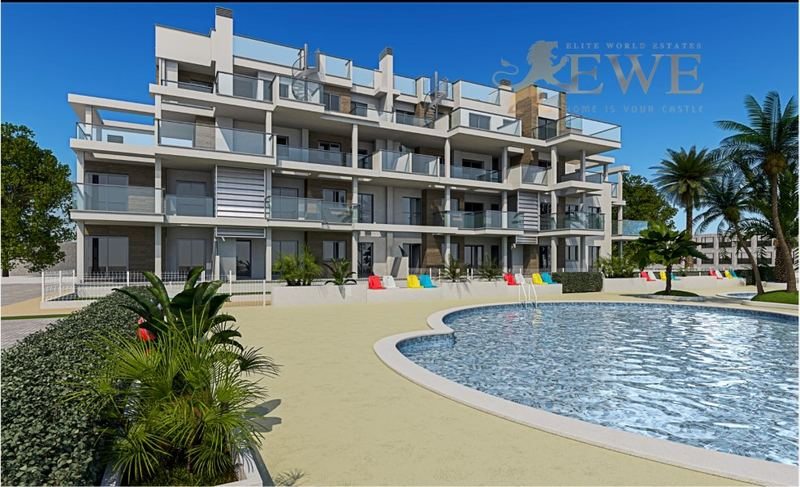
EWE3289Dénia
Apartment close to the beach in Denia
€499,000
3 bedrooms · 2 bathrooms · 73 m²Ref. EWE3289
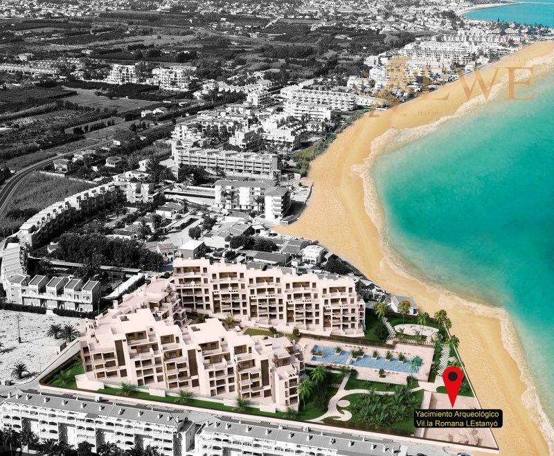
EWE1722Dénia
Excellent sea view apartment on the first line of Dénia
€499,000
2 bedrooms · 2 bathrooms · 73.23 m²Ref. EWE1722
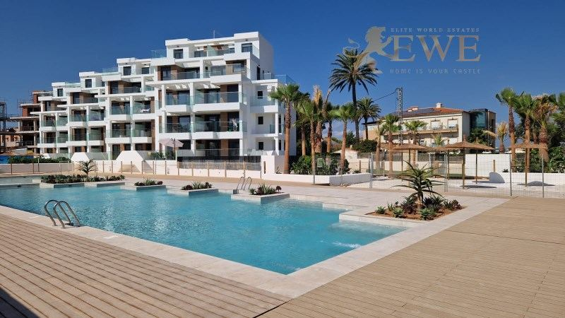
EWE1743Dénia
Stunning penthouse on the first line of Dénia, Costa Blanca
€625,000
3 bedrooms · 2 bathrooms · 98 m²Ref. EWE1743
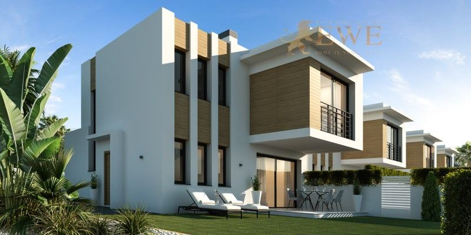
EWE1982Dénia
Independent villa in the beautiful port city of Denia
€675,000
3 bedrooms · 3 bathroomsRef. EWE1982
The city
Living in Dénia
Dénia is a town of about 45,000 people on the northern tip of the Costa Blanca, halfway between Valencia and Alicante. Its castle stands on a hill above the old town and the port, and the Montgó mountain rises behind it.
North of the port, Les Marines has kilometres of sandy beaches, while to the south Les Rotes has rocky coves with clear water. The port has a marina and ferries to Ibiza and Mallorca, and Dénia is known for its food, from its famous red prawns to the tapas bars of the old town.
The town is lively all year, with shops, markets, schools and a hospital. Valencia and Alicante airports are both about an hour and a quarter away by car, and Jávea about 15 minutes.
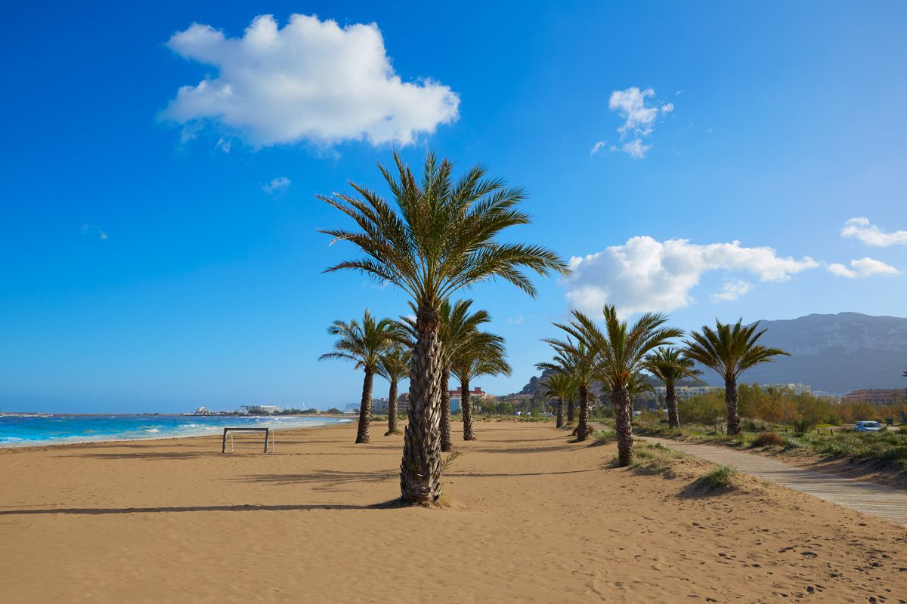
Where to buy
The main areas of Dénia
Old town and port
Below the castle, with the marina, restaurants and shops. Apartments for living all year.
Les Marines
The long sandy beaches north of the port. Apartments and houses close to the sea, many on the frontline.
Les Rotes
The rocky coast south of the port, with coves and clear water. Villas and apartments by the sea.
Montgó
The slopes of the mountain behind the town, green and quiet. Villas with views over the sea.
Els Poblets
The small neighbouring town to the north, near the sandy beaches. Townhouses and apartments, often for less money.
Budget
What it costs to buy in Dénia
On top of the price you pay tax and fees. For a new home at €395,000, for example, that is €39,500 VAT and €5,530 stamp duty, plus notary, land registry and legal fees. Taxes on resale homes are different, so always ask us for the exact figure for the home you like.
| New build | 10% VAT (IVA) + 1.4% stamp duty (AJD) |
|---|---|
| Resale home | 9% transfer tax (ITP), 11% above €1 million |
| Notary, registry, lawyer | about 1.5–2.5% of the price |
| Every year | IBI property tax and community fees, which depend on the home |
Questions
Buying property in Dénia: questions and answers
How much does an apartment cost in Dénia?
Our apartments in Dénia start at €254,000 today, and most with 2 or 3 bedrooms cost between €330,000 and €500,000. Frontline apartments with sea views cost up to about €625,000 for a penthouse.
Les Marines or Les Rotes: which is better?
Les Marines has long sandy beaches, which suit families. Les Rotes has rocky coves with very clear water, good for swimming and snorkelling, and is quieter.
How far is Dénia from the airport?
Valencia airport is about 100 km away and Alicante-Elche airport about 95 km, each around an hour and a quarter by car.
What costs are there on top of the price?
In the Valencian Community you pay 10% VAT and 1.4% stamp duty on a new build, and 9% transfer tax (11% above €1 million) on a resale home. Notary, land registry and legal fees add about 1.5–2.5%.
Can foreigners buy property in Dénia?
Yes. Anyone can buy property in Spain. You need a Spanish NIE tax number and usually a Spanish bank account, and we help you with both. See our guide to the NIE number.


Looking for a home in Dénia?
Tell us your budget and what you need. We reply within one working day, in English, German, Spanish or Polish.